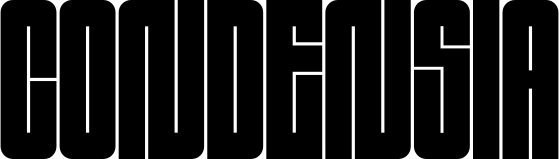
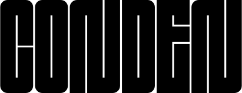

KONSEQUENT KONSTRUIERT
Die von mir entwickelte Schrift folgt einem strengen System. Alle Zeichen beruhen auf denselben wenigen Formen, die sich wiederholen, verschieben und neu zusammensetzen. Dadurch entsteht ein Rhythmus, der dennoch labyrinthartig wirkt. Die konsequente Wiederholung wirkt nicht monoton, sondern erzeugt Spannung. Die Gestaltung ist reduziert, entwickelt aber durch ihre Dichte eine starke Präsenz. Sie eignet sich für plakative Anwendungen im grossen Format.
 